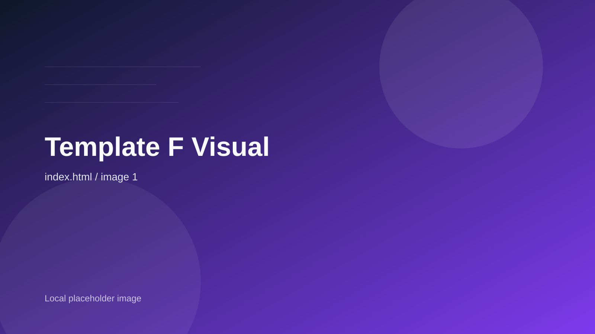

Neural Ops
運用ログを学習し、負荷変動に応じて自律的に構成を最適化します。

AI 運用、分散クラウド、
ゼロトラストをまとめて扱い、
2030 年基準の拡張性を
いまの事業に実装します。
Capabilities
分散コンピュート、AI 自律運用、認証基盤をひとつのアーキテクチャとして扱います。
運用ログを学習し、負荷変動に応じて自律的に構成を最適化します。
各拠点にまたがる分散処理を整理し、レイテンシとコストを圧縮します。
ID、権限、監査証跡をつなぎ、セキュリティを運用負荷にしません。
現場で判断に使える指標まで含めて、ダッシュボードを再設計します。
Why Neo-Sync
PoC 止まりの AI、 肥大化したクラウド費用、 属人化したセキュリティ運用。 その断片をつなぎ直すための設計と実装に集中しています。
Latency
50ms
Uptime
99.9%
Nodes
14k+